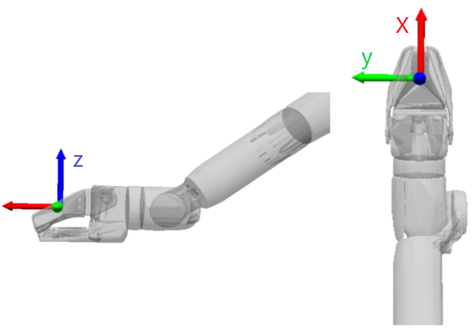

Arm Concepts
SynchronizedCommand
Arm and gripper commands have been incorporated into the SynchronizedCommand message. This top level request allows you to specify any combination of mobility, arm, and gripper command. By packing the individual commands into a single message, we guarantee that all commands arrive to the robot at the same time. For robots without arms, any arm_command or gripper_command will be ignored.
message SynchronizedCommand {
message Request {
ArmCommand.Request arm_command = 1;
MobilityCommand.Request mobility_command = 2;
GripperCommand.Request gripper_command = 3;
}
}
The ArmCommand message supports the following commands:
Cartesian Moves Control the end-effector in Cartesian space.
Specify mixed position and wrench trajectories for the end effector
Joint Moves Control the joint angles of the arm.
Predefined Poses Move the arm to some predefined configurations
Arm Velocity Velocity control of the end-effector.
Gaze Point the end-effector at a point in the world
Drag Drag an object held in the gripper
Stop Stop and hold the arm in place
Requests
If you send a SynchronizedCommand with only a subset of the messages filled out, only those commands will be overwritten. For example, consider the following pseudo-code:
Time t = 0
message SynchronizedCommand {
message Request {
ArmCommand.Request arm_command = stow;
MobilityCommand.Request mobility_command = stand;
GripperCommand.Request gripper_command = close;
}
}
Time t = 2
message SynchronizedCommand {
message Request {
MobilityCommand.Request mobility_command = se2_trajectory_request;
}
}
After the robot receives the second request at time t = 2, it will continue executing the arm stow command and the gripper close command, while over-writing the t = 0 mobility stand request with the new se2_trajectory_request.
Similarly, if you sent a partially filled out SynchronizedCommand after sending a FullBodyCommand, the empty SynchronizedCommand requests will be auto filled with safe_stop requests.
Feedback
With the introduction of ArmCommand and GripperCommand requests inside of the SynchronizedCommand, we have also modified feedback to return three messages, one feedback message for each request respectively.
ArmCommand Requests
There are 7 different commands listed below that fall under the ArmCommand banner. The arm has 6 joints (+ a gripper), and can be controlled by specifying the joint angles directly, or by specifying a desired position and orientation (called a pose) where the hand should be. Joint angles are specified in radians, and Cartesian poses are specified with a 3D position in meters, and orientation is expressed with unit quaternions.
Cartesian Moves
When specifying a pose for the hand to move to, the user is able to specify 2 frames, and then a transform between those 2 frames. This fully defines the position and orientation the robot will move its hand to.
The first frame is the “root” frame, which is the frame that the hand moves with respect to. Common choices for this frame are the “odom”, “vision” and “flat_body” frames. The second frame is a “tool” frame. If trying to grasp something or just move the arm around, this can often be left unset, and this will default to the hand frame. However, if a pointing device or sensor is attached to the end effector of the arm, setting the tool frame to be a transform to the point of interest can allow the user to directly move the sensor to a desired pose.
As an example, if we wanted to have the robot touch the center of a fiducial with a 0.5m stick it is holding, we would set the following transforms:
root_frame_name: fiducial_001
wrist_tform_tool: {position: {x: 0.5 y: 0 z: 0} rotation: {w: -0.7071 x: 0 y: 0.7071 z: 0}}
root_tform_task: {position: {x: 0 y: 0 z: 0} rotation: {w: 1 x: 0 y: 0 z: 0}}
Note that users can also send sequences of poses with times, specify max velocity and acceleration, and add other options as well. See arm_command.proto for more details
The Cartesian move request also allows you to specify a force/torque trajectory for the tool. For each axis in the task frame, you select if an axis is set to position mode (input read desired from SE3Trajectory) or to force (input read from WrenchTrajectory). This supports hybrid control of the arm where users can specify, for example, Z to be in force control with X and Y in position control.
See the following examples for requesting ArmCartesianCommands:
Arm and Mobility Command
Arm Force Control
Simple
Trajectory
Joint Moves
Users can specify a set of joint angles they want the arm to move to. Users can optionally set a maximum velocity and acceleration that each joint is allowed to travel at, and/or specify full trajectories with times that they want the robot to reach those joint angles.
Joint moves can be especially useful when moving the arm to hard-to-reach places, or trying to make the arm wave through a set of predefined poses.
See the Joint Move example for requesting ArmJointMoveCommands.
Predefined Poses
Users can command the arm to move to the following poses: Stow (arm tucked away, ready to walk) Carry (useful for carrying an object somewhere) Ready (arm out in front, ready to manipulate)
The predefined stow pose will refuse to stow if the arm is holding something. You can still issue joint move commands to a stow configuration if desired, but be aware that no collision avoidance system exists. Contact between the item and the world or the item and the robot may occur during arm motion.
See the Stow/Unstow example for requesting NamedArmPositions.
Arm Velocity
When controlling the arm with a joystick, because of latency, it can often be better to send velocity commands rather than position commands. Users can specify the velocity in a cylindrical frame around the body, or with their own specified frame. Both linear and angular velocity can be specified.
Gaze
Sometimes it is useful to have the arm continuously look at something while moving between positions. The user can specify both a position / trajectory of the target and a desired trajectory of the camera. If a different camera is attached to the end effector, wrist_tform_tool can be used to specify the x-axis of the camera, which is the direction we look at. Note that some of the desired trajectory’s orientation will be ignored, since we will constrain the x-axis of the camera to look at the target at all times.
See the Gaze example for requesting GazeCommands:
Stop
When something is going wrong, sending this command will bring the arm to a stop. It will also apply minimal forces to the world. For example, if the arm is in the middle of opening a heavy door and a stop command is sent, the arm will comply and let the door close.
Drag
Once the gripper is holding something, calling this command will put the arm into a compliant state that will let the robot pull a heavy object around. Drag will generally try to keep the object in front of the body for maximum pulling force. By sending the appropriate locomotion commands to move the body in a backwards direction, the robot can move heavy things around in the world.
Mobility Request
FollowArmCommand
The robot’s base will move in response to the hand’s position, allowing the arm to reach beyond its current workspace. If the hand is requested to move forward, then the base will begin walking forward. Our chalk drawing example takes advantage of this capability, where the task is the execution of a drawing with the hand, but the entire robot is recruited to accomplish the task.
See the following examples for requesting FollowArmCommands:
GCode
Arm With Body Follow
Hand frame
The hand frame is used by many of the ArmCommand requests available in the API. The hand frame has its origin slightly in front of the gripper’s palm plate and is aligned with the parent link’s (wrist) orientation. The position of the hand frame’s origin relative to the parent wrist frame is: x = 0.19557 m y = 0 m z = 0 m The rotation between the hand frame and the wrist is the identity matrix. When specifying trajectories using default values, the target position of the trajectory is the origin of this hand frame.
Collision avoidance
The Arm has no proximity awareness of its own, so maintaining safe distance is essential. If obstacles or people are in the path of operation, the Arm has no collision avoidance capability to prevent contact. Safe Arm operation depends on the Operator and/or safety observers maintaining situational awareness and halting operations if the Arm is at risk of contacting objects or people.
WARNING: The robot Arm does not have any obstacle avoidance capability.
Even if the robot’s onboard cameras can see an obstacle, the Arm cannot avoid it without the Operator’s intervention. In tight spaces, it is possible for the gripper head to inadvertently collide with something in the world. When operating around sensitive, fragile, or other objects that should not be contacted, extra care should be taken to avoid collisions with the Arm.
Note: The Arm does have the ability to avoid colliding with itself, the robot’s body, and any properly configured payloads attached to the body.
Body force limiter
In order to prevent large forces from being applied to the body when the Arm collides with something in the world, Arm torques are automatically limited to protect the body from being disturbed.
Safety notes
Arm torque limitations will not prevent damage to the environment and should NOT be used as a safety feature. These limitations are designed to reduce the likelihood that the robot will fall over if the Arm collides with some obstacle.
If the robot walks into an object with the Arm outstretched that object can be damaged.
If attempting to lift and carry an object, the force limiter may prevent the arm from lifting the object if it is too heavy. The force limiter can be disabled in the Arm menu.
Care should be taken when disabling the force limiter. If the Arm contacts something in the world, it may apply high forces to the world and the robot body. This can potentially cause damage to the environment and/or the robot or the Arm, and make the robot inoperable.